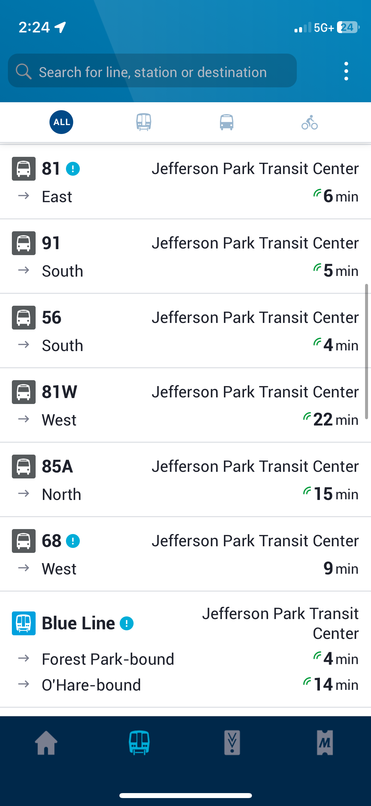

Despite all the good that this neighborhood has to offer, there has been a recent lack of businesses and unreliable bus times. This has recently been causing residents to move out, drive further distances for certain amenities, and having to find alternatives. Additionally, looking for a scapegoat, many residents have turned to blaming people of color and migrants.
In Jefferson Park, there has been a relatively recent departure of certain companies and businesses from the neighborhood. While there have been many reasons for the departures, one of them has been crime. One of the local bakeries got robbed and the owner moved somewhere else as a result. Along with the recent spikes in crime, residents have been moving out which have reduced company profits. For such reasons, other companies have been moving out. In the area, a Walgreens, bakery, and smoke shop have removed operations in the area.
Secondly, while the CTA is improving their bus schedules and timeliness, there has been a period where the buses in the area either showed up/departed late from the transportation center, or have never showed up. Moreover, what was worse was that the Ventra app which tracked the buses was wrong. This caused "ghost buses," buses that never actually showed up or existed. While this poses a relatively minor issue today, I once was waiting thirty minutes in the cold for the #56 bus to show up; it was about 25 minutes behind schedule.

With businesses moving out, and transportation posing certain issues, many individuals have been relying on the Joined Hands Food Pantry at the Our Lady of Victory Church, which operates every Wednesday. Despite the help the group provides, there have been some bad actors who have inhibited the assistance given by the group. I have been working with the pantry for a while and have had some experiences with those we help. There have been multiple occasions where the people who come for food verbally harass the volunteers, demand they get more food while others have not gotten their share yet, and have straight up stolen items when our backs were turned. As desperate as these people may truly be, this has been causing many issues. It has held up the line, required people to wait awfully long periods of time to get their food, resulted in the police being called, and reduced the amount of food given to others significantly. Moreover, those seeking assistance are required to fill out a form about their family size to divide the food equally. Many individuals have abused this and have taken up to three times the amount of food they need. There are times where the volunteers and I get to the last people and there is barely anything left because the people before abused the systems in place.
Jefferson Park was, and still is, a predominantly white neighborhood. Back in 2017, with crime and community issues on the rise, neighborhood officials proposed plans for an affordable housing development to help veterans and those with disabilities. Despite the benefits that would come, a crowd opposing the idea stating that the project would in no way help veterans but only poor groups that would rise crime rates. According to the Reader, "One home owner said she was worried tenant screening wouldn’t prevent future residents 'from bringing in every miscreant cousin, nephew, brother, son.' Another said she’s worked with Section 8 voucher holders before. 'The behavior never changes.'" Despite development being completed in 2022 and many people benefitted, individuals in the community have continued to blame other groups, recently shifting views towards migrants being the root causes of crime and issues. When discussing littering and reckless driving getting worse in the neighborhood with my parents, they turned to the illegal migrants and people of color being causes. They stated how those groups do not care for rules and are mainly part of gangs.